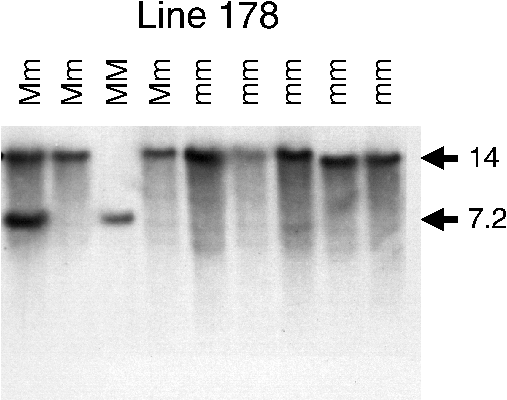

Figure 2: Representative DNA gel blot analysis of DNA from plants from Line
178.
DNA was isolated from individual plants. The genotype of these plants was
determined by scoring in the next generation for those plants that produced
seed. Lanes are labelled as follows : MM - homozygous male fertile plants,
Mm - heterozygous plants, and mm - homozygous male sterile plants. The DNA
was cleaved with EcoRI, resolved on an agarose gel, transferred onto nylon,
and hybridised to a radiolabelled probe derived from the right border of
the T-DNA. Sizes (in kilobases) of the DNA fragments are shown on the left.
DNA representing 210 individual F2 plants was analysed in this manner. The
larger T-DNA hybridising EcoRI fragment segregated with the ms mutation
in these plants.